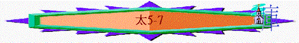

|
天 國 君 王 |
||||||||||
|
出生 |
初露 |
事工 |
被棄 |
憐恤 |
培訓 |
對答 |
責備 |
忍受 |
復活 |
吩咐 |
|
1-2 |
3-4 |
5-10 |
11-13 |
14-15 |
16-18 |
19-22 |
23-25 |
26-27 |
28 |
|
三.權能的事工(5-10)
「因為我在人的權下，也有兵在我以下；對這個說：『去！』他就去；對那個說：『來！』他就來；對我的僕人說：『你做這事！』他就去做。」」太8:9
「但要叫你們知道，人子在地上有赦罪的權柄」；就對癱子說：「起來！拿你的褥子回家去吧。」」太9:6
「耶穌叫了十二個門徒來，給他們權柄，能趕逐污鬼，並醫治各樣的病症。」太10:1
～一個君王需要有權柄、能力，太5-10記述這位天國君王在開始傳道中，已充滿能力權能，連風和海也要聽從祂(所以5-10章中有很多「權柄」「能」「聽從」等字眼)
～而主在世主要的工作是宣講及醫治，從祂所作的顯出祂的權能！
1.所講→滿有權柄(5-7)(天國子民應有的表現)
「耶穌看見這許多的人，就上了山，既已坐下，門徒到他跟前來，他就開口教訓他們，說：」太5:1-2
「耶穌講完了這些話，眾人都希奇他的教訓；因為他教訓他們，正像有權柄的人，不像他們的文士。」太7:28-29
～此段被人稱為「登山寶訓」，如根據5:1，應是主在山上同群眾講的一段話(應是同一時間)
～重點是講天國子民應有的表現，因當時很多猶太人覺得自己已行律法，可以得天國，但主指出真正天國子民應是怎樣的。主講完了寶訓後，眾人感受到祂的話有權柄的，不像文士所講的！
～而天國子民應有甚麼表現……
A.高尚的品性(5:1-13)
a.虛心
「虛心的人有福了！因為天國是他們的。」5:3
「耶穌舉目看著門徒，說：你們貧窮的人有福了！因為神的國是你們的。」路6:20
～一開始對眾人及門徒所講是虛心，虛心意思是「心靈貧窮」，路6:20說「貧窮」，猶太人希望擁有財富，富有是尊貴的象徵，但很奇怪，要得天國，卻要反過來「貧窮」。
～此「貧窮」可能有兩個意思，第一是心靈覺得自己不完全，不足，要來到神的面前承認悔改，這樣就得天國；第二是真正認識自己，發視在神面前自己仍是無有的，願時常有謙卑的心與神同行，這樣常在神面前承認貧窮，但後來反得實質天國的富足。
b.哀慟
「哀慟的人有福了！因為他們必得安慰。」5:4
～當一個基督徒肯面對自己心靈的不完全，也看到世界的不完美，他很自然會有哀慟，為罪，為世人難過，但在主裏必得安慰，而在新天新地中也沒有悲哀、哭號
c.溫柔
「溫柔的人有福了！因為他們必承受地土。」5:5
「然而主的僕人不可爭競，只要溫溫和和的待眾人，善於教導，存心忍耐，用溫柔勸戒那抵擋的人；或者神給他們悔改的心，可以明白真道，」提後2:24-25
～溫柔此字與「虛心」「謙卑」「忍耐」「無偽」「不爭競」「溫和」有關，不是以惡對惡，內心卻充滿主的謙和，不去堅持得祂甚麼，不「爭一口氣」，而昔日以撒沒與別人爭水井，但後來神反賜他得活井及地土，在神國裏，不爭競柔和的人，也必承受地土
d.飢渴慕義
「飢渴慕義的人有福了！因為他們必得飽足。」5:6
「節期的末日，就是最大之日，耶穌站著高聲說：「人若渴了，可以到我這裡來喝。信我的人就如經上所說：『從他腹中要流出活水的江河來。』」約7:37-38
～人對「義」對美好的事情，對主(主就是義了)有渴慕的心，他們必得飽足(心靈上的滿足及在彌賽亞國度實質不餓的滿足)
e.憐恤
「憐恤人的人有福了！因為他們必蒙憐恤。」5:7
～憐恤原文「慈悲」，有憐憫、同情、饒恕，體諒及解除人痛苦意思，若天國子民真能做到，神也必饒恕我們，憐恤我們
f.清心
「清心的人有福了！因為他們必得見神。」5:8
「誰能登耶和華的山？誰能站在他的聖所？就是手潔心清、不向虛妄、起誓不懷詭詐的人。」詩24:3-4
～清心〝pure
in heart〞沒有罪罪污，心不向虛妄，在世沒受污染，沒詭詐，那人必可以見聖潔的神
～而聖經也說「清心禱告的人」，禱告的人，心也清潔，對神有純一的心
g.使人和睦
「使人和睦的人有福了！因為他們必稱為神的兒子。」5:9
「所以，我們務要追求和睦的事與彼此建立德行的事。」羅14:19
～不少猶太人渴慕推翻羅馬政權，但主卻說「使人和睦」，不是爭戰，這樣才配稱為神的兒子(事實上，主在世也沒有與羅馬政權抗衡)
h.為義受逼迫
「為義受逼迫的人有福了！因為天國是他們的。」5:10
「親愛的弟兄啊，有火煉的試驗臨到你們，不要以為奇怪（似乎是遭遇非常的事）倒要歡喜；因為你們是與基督一同受苦，使你們在他榮耀顯現的時候，也可以歡喜快樂。你們若為基督的名受辱罵，便是有福的；因為神榮耀的靈常住在你們身上。」彼前4:12-14
～當時的猶太基督徒，的確受到逼迫，被人辱罵，捏造各樣壞事毀謗他們，但他們可以歡喜，因為在主裏所作是不徒然，必有大的賞賜。
總結：「你們是世上的鹽。鹽若失了味，怎能叫他再鹹呢？以後無用，不過丟在外面，被人踐踏了。」5:13
～我們應當作有以上內涵的基督徒，如鹽有味一般，若失了味，主怎能用我們呢！
B.顯露的職責(5:14-16)
a.光的本質
「人點燈，不放在斗底下，是放在燈臺上，就照亮一家的人。」5:14
～我們的本質除了要謙和外，但不可忽略自己的本質是世上的光，無論我們認為自己多麼軟弱，我們仍是世上的光
b.光的責任
(1)不能隱藏
「你們是世上的光。城造在山上是不能隱藏的。人點燈，不放在斗底下，是放在燈臺上，就照亮一家的人。」5:14-15
「耶穌又對他們說：「人拿燈來，豈是要放在斗底下，床底下，不放在燈臺上嗎？」可4:21
～斗是羅馬衡量的器具，人點燈不會放在斗底下，將光輝遮掩，基督徒也不可以因為信主而避世，我們的責任是要顯出我們的本質
(2)有好行為
「你們的光也當這樣照在人前，叫他們看見你們的好行為，便將榮耀歸給你們在天上的父。」5:16
～用好行為影響世界
(3)歸榮耀給神
C.完全的義行(5:17-48)
「莫想我來要廢掉律法和先知。我來不是要廢掉，乃是要成全。」5:17
～當時有人批評耶穌是廢掉律法，說一些違反律法不同的道理，但耶穌要說明祂不是廢掉，乃是成全律法，顯出律法背後的真正意義---像天父完全一樣。
a.更高的要求
「我告訴你們，你們的義若不勝於文士和法利賽人的義，斷不能進天國。」5:20
(1)更勝過文士法利賽人的義
～屬神的人不是單停留在死守神的律法地步，乃是應達到更高的要求！勝過文士與法利賽人的義！
(A)更大的寬恕
「「你們聽見有吩咐古人的話，說：『不可殺人』；又說：『凡殺人的難免受審判。』只是我告訴你們：凡（有古卷在凡字下加：無緣無故地）向弟兄動怒的，難免受審判；凡罵弟兄是拉加的，難免公會的審斷；凡罵弟兄是魔利的，難免地獄的火。所以，你在祭壇上獻禮物的時候，若想起弟兄向你懷怨，就把禮物留在壇前，先去同弟兄和好，然後來獻禮物。」5:21-24
～我們不單停留在不可殺人中，更要不恨人，甚至主動與人和好，重建關係，這才是律法背後愛人如己的精神。
(B)更高的聖潔
(a)人際關係上要聖潔
「你們聽見有話說：『不可姦淫。』只是我告訴你們，凡看見婦女就動淫念的，這人心裡已經與他犯姦淫了。」5:27-28
～不單停留在不可姦淫，更不要心裡有歪念！
(b)婚姻關係上要聖潔
「又有話說：『人若休妻，就當給他休書。』只是我告訴你們，凡休妻的，若不是為淫亂的緣故，就是叫他作淫婦了；人若娶這被休的婦人，也是犯姦淫了。」5:31-32
～非因淫亂緣故，人不可休妻，要尊重婚盟。
(C)更真的承諾
「你們又聽見有吩咐古人的話，說：『不可背誓，所起的誓總要向主謹守。』只是我告訴你們，什麼誓都不可起。不可指著天起誓，因為天是神的座位；」5:33-34
～猶太人因為起了誓，卻不能遵守，但不能按聖經要求償還，他們想了一個方法──除了指著神和聖物的起誓外，別的可以不守，所以他們會從中可以借詞逃避盟約。
～耶穌卻要他們不可起誓，要作一個不詭詐的人，說是就是是，說不是就是不是，不要再找藉口來背約
(2)更勝外邦人的義
「你們若單愛那愛你們的人，有什麼賞賜呢？就是稅吏不也是這樣行嗎？」5:46
～此段講及如何對仇敵
(A)不與對方作對
「你們聽見有話說：『以眼還眼，以牙還牙。』只是我告訴你們，不要與惡人作對。有人打你的右臉，連左臉也轉過來由他打；」5:38-39
(B)愛你們的仇敵
「你們聽見有話說：『當愛你的鄰舍，恨你的仇敵。』」5:43
(a)為對方祈禱
「只是我告訴你們，要愛你們的仇敵，為那逼迫你們的禱告。」5:44
(b)向對方問安
「你們若單請你弟兄的安，比人有什麼長處呢？就是外邦人不也是這樣行嗎？」5:47
(3)像天父完全的一樣
「所以，你們要完全，像你們的天父完全一樣。」5:48
～義最終的標準不是死的文字，而是效法天父，像祂完全一樣，天父如何，我們也如何。
D.真實的善行(6:1-18)
～不少猶太人很喜歡在人面前施捨、禱告、禁食，叫人看見他們在宗教、在生活上的好行為(善行)，但主所說的卻不是這樣。
a.暗中的施捨
「你們要小心，不可將善事行在人的面前，故意叫他們看見，若是這樣，就不能得你們天父的賞賜了。」6:1
「你施捨的時候，不要叫左手知道右手所做的，」6:3
～不是叫人看到的，乃是暗中行的，天父必察看及報答。
b.應有的禱告
(1)禱告的地方--暗中
「你們禱告的時候，不可像那假冒為善的人，愛站在會堂裡和十字路口上禱告，故意叫人看見。我實在告訴你們，他們已經得了他們的賞賜。你禱告的時候，要進你的內屋，關上門，禱告你在暗中的父；你父在暗中察看，必然報答你。」6:5-6
(2)禱告的內容--主禱文
「你們禱告，不可像外邦人，用許多重複話，他們以為話多了必蒙垂聽。」6:7
(A)先求神的事
「所以，你們禱告要這樣說：我們在天上的父：願人都尊你的名為聖。願你的國降臨；願你的旨意行在地上，如同行在天上。」6:9-10
～神的名、神的國、神的旨意應放在祈禱中的第一要緊之事。
(B)再求已之事
(a)日用需要
「我們日用的飲食，今日賜給我們。」6:11
～不是為明天而求，也不是求奢侈的事，乃求日用的基本需要。
(b)與神關係
「免我們的債，如同我們免了人的債。」6:12
(c)靈界爭戰
「不叫我們遇見試探；救我們脫離兇惡（或作：脫離惡者）。因為國度、權柄、榮耀，全是你的，直到永遠。阿們（有古卷沒有因為至阿們等字）！」6:13
c.真正的禁食
「你們禁食的時候，不可像那假冒為善的人，臉上帶著愁容；因為他們把臉弄得難看，故意叫人看出他們是禁食。我實在告訴你們，他們已經得了他們的賞賜。你禁食的時候，要梳頭洗臉，不叫人看出你禁食來，只叫你暗中的父看見；你父在暗中察看，必然報答你。」6:16-18
(1)不張揚
(2)在暗中
E.更大的追求(6:19-34)
a.追求永恆
(1)地上財富會改變
「不要為自己積儹財寶在地上；地上有蟲子咬，能銹壞，也有賊挖窟窿來偷。」6:19
～會壞，會被偷掉
(2)天上財寶卻永恆
「只要積儹財寶在天上；天上沒有蟲子咬，不能銹壞，也沒有賊挖窟窿來偷。因為你的財寶在那裡，你的心也在那裡。眼睛就是身上的燈。你的眼睛若瞭亮，全身就光明；你的眼睛若昏花，全身就黑暗。你裡頭的光若黑暗了，那黑暗是何等大呢！」6:20-23
～所以我們的心應放在永恆的事上，若放在地上，可能我們易受金錢、財物遮掩我們的眼睛，令我們落在世界的罪惡與黑暗中，令我們整個人也敗壞起來！
b.專一事奉
「一個人不能事奉兩個主；不是惡這個，愛那個，就是重這個，輕那個。你們不能又事奉神，又事奉瑪門（瑪門：財利的意思）。」6:24
c.勿慮世事
～為什麼不憂慮？
(1)次序問題
「所以我告訴你們，不要為生命憂慮吃什麼，喝什麼；為身體憂慮穿什麼。生命不勝於飲食嗎？身體不勝於衣裳嗎？」6: 25
(2)信心問題
「你們看那天上的飛鳥，也不種，也不收，也不積蓄在倉裡，你們的天父尚且養活他。你們不比飛鳥貴重得多嗎？」6:26
「何必為衣裳憂慮呢？你想野地裡的百合花怎麼長起來；他也不勞苦，也不紡線。」6:28
～人為何憂慮？因為「小信」，若信天父的看顧，必沒掛慮。
(3)實際問題
「你們那一個能用思慮使壽數多加一刻呢（或作：使身量多加一肘呢）？」6:27
～憂慮在解決問題中是沒用的！
(4)身份問題
「然而我告訴你們，就是所羅門極榮華的時候，他所穿戴的，還不如這花一朵呢！你們這小信的人哪！野地裡的草今天還在，明天就丟在爐裡，神還給他這樣的妝飾，何況你們呢！所以，不要憂慮說：吃什麼？喝什麼？穿什麼？這都是外邦人所求的，你們需用的這一切東西，你們的天父是知道的。」6:30-32
～吃什麼、喝什麼，是外邦人求的事，作為天父的兒女，我們應知道天父是知道我們的需要的，我們不必憂心。
(5)應許保證
「你們要先求他的國和他的義，這些東西都要加給你們了。」6:33
F.恩慈的待人(7:1-12)
a.不論斷人
「你們不要論斷人，免得你們被論斷。」7:1
～天國的子民為何不可論斷其他人？
(1)免得被論斷
「因為你們怎樣論斷人，也必怎樣被論斷；你們用什麼量器量給人，也必用什麼量器量給你們。」7:2
(2)自己也有錯
「你自己眼中有樑木，怎能對你弟兄說：『容我去掉你眼中的刺』呢？」7:4
b.善待別人
(1)天父的善待
(A)正常的看法
「不要把聖物給狗，也不要把你們的珍珠丟在豬前，恐怕他踐踏了珍珠，轉過來咬你們。」7:6
～在當時的社會裡，猶太人不會將律法介紹給外邦人，也不會與他們交往，因外邦人不配有神的恩（如糟蹋一樣）
(B)天父的深恩
「你們祈求，就給你們；尋找，就尋見；叩門，就給你們開門。」7:7
「你們雖然不好，尚且知道拿好東西給兒女，何況你們在天上的父，豈不更把好東西給求他的人嗎？」7:11
～選民也是不好，神沒理由將恩典給他們糟蹋，但神是我們的天父，祂卻厚待我們(即使我們不好)
(2)我們的效法
「所以，無論何事，你們願意人怎樣待你們，你們也要怎樣待人，因為這就是律法和先知的道理。」7:12
～既然天父這樣待我們，我們也要善待一些我們認為不好的人，況且我們也想人善待自己
G.智慧的分析(7:13-27)
a.兩條門路
「你們要進窄門。因為引到滅亡，那門是寬的，路是大的，進去的人也多；引到永生，那門是窄的，路是小的，找著的人也少。」7:13-14
～有很多人認為他們可以行進天國，自以為義，路也易行，但至終是滅亡的；天國的子民要留心，引各永生之門，可能少人認同及行上，但是正路！
b.兩種果樹
(1)結壞果子--假先知
(A)有門徒的外貌卻沒美好生命的特質
「你們要防備假先知。他們到你們這裡來，外面披著羊皮，裡面卻是殘暴的狼。憑著他們的果子，就可以認出他們來。荊棘上豈能摘葡萄呢？蒺藜裡豈能摘無花果呢？」7:15-16
「所以，憑著他們的果子就可以認出他們來。」7: 20
(B)有事奉的表現卻沒行神旨意的行動
(2)結好果子--真子民
「這樣，凡好樹都結好果子，惟獨壞樹結壞果子。」7:17
c.兩等根基
(1)堅穩根基--聽而去行
「所以，凡聽見我這話就去行的，好比一個聰明人，把房子蓋在磐石上；雨淋，水沖，風吹，撞著那房子，房子總不倒塌，因為根基立在磐石上。」7:24-25
(2)易塌房子--聽而不行
「凡聽見我這話不去行的，好比一個無知的人，把房子蓋在沙土上；雨淋，水沖，風吹，撞著那房子，房子就倒塌了，並且倒塌得很大。」7:26-27
總結
「耶穌講完了這些話，眾人都希奇他的教訓；因為他教訓他們，正像有權柄的人，不像他們的文士。」7:28-29